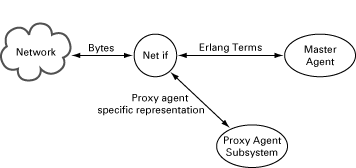

Definition of Agent Net if
View Source
The Network Interface (Net If) process delivers SNMP PDUs to a master agent, and receives SNMP PDUs from the master agent. The most common behaviour of a Net if process is that is receives bytes from a network, decodes them into an SNMP PDU, which it sends to a master agent. When the master agent has processed the PDU, it sends a response PDU to the Net if process, which encodes the PDU into bytes and transmits the bytes onto the network.
However, that simple behaviour can be modified in numerous ways. For example, the Net if process can apply some kind of encrypting/decrypting scheme on the bytes or act as a proxy filter, which sends some packets to a proxy agent and some packets to the master agent.
It is also possible to write your own Net if process. The default Net if process
is implemented in the module snmpa_net_if and it uses UDP as the transport
protocol i.e the transport domains transportDomainUdpIpv4 and/or
transportDomainUdpIpv6.
This section describes how to write a Net if process.
Mandatory Functions
A Net if process must implement the SNMP agent network interface behaviour.
Messages
The section Messages describes mandatory messages, which Net If must send and be able to receive.
In this section an Address field is a {Domain, Addr} tuple where Domain is
transportDomainUdpIpv4 or transportDomainUdpIpv4, and Addr is an
{IpAddr,IpPort} tuple.
Outgoing Messages
Net if must send the following message when it receives an SNMP PDU from the network that is aimed for the MasterAgent:
MasterAgent ! {snmp_pdu, Vsn, Pdu, PduMS, ACMData, From, Extra}Vsnis either'version-1','version-2', or'version-3'.Pduis an SNMP PDU record, as defined insnmp_types.hrl, with the SNMP request.PduMSis the Maximum Size of the response Pdu allowed. Normally this is returned fromsnmpa_mpd:process_packet(see Reference Manual).ACMDatais data used by the Access Control Module in use. Normally this is returned fromsnmpa_mpd:process_packet(see Reference Manual).Fromis the sourceAddress.Extrais any term the Net if process wishes to send to the agent. This term can be retrieved by the instrumentation functions by callingsnmp:current_net_if_data(). This data is also sent back to the Net if process when the agent generates a response to the request.
The following message is used to report that a response to a request has been received. The only request an agent can send is an Inform-Request.
Pid ! {snmp_response_received, Vsn, Pdu, From}Pidis the Process that waits for the response for the request. The Pid was specified in thesend_pdu_reqmessage (see below).Vsnis either'version-1','version-2', or'version-3'.Pduis the SNMP Pdu receivedFromis the sourceAddress.
Incoming Messages
This section describes the incoming messages which a Net if process must be able to receive.
{snmp_response, Vsn, Pdu, Type, ACMData, To, Extra}This message is sent to the Net if process from a master agent as a response to a previously received request.
Vsnis either'version-1','version-2', or'version-3'.Pduis an SNMP PDU record (as defined in snmp_types.hrl) with the SNMP response.Typeis the#pdu.typeof the original request.ACMDatais data used by the Access Control Module in use. Normally this is just sent tosnmpa_mpd:generate_response_message(see Reference Manual).Tois the destinationAddressthat comes from theFromfield in the correspondingsnmp_pdumessage previously sent to the MasterAgent.Extrais the term that the Net if process sent to the agent when the request was sent to the agent.
{discarded_pdu, Vsn, ReqId, ACMData, Variable, Extra}This message is sent from a master agent if it for some reason decided to discard the pdu.
Vsnis either'version-1','version-2', or'version-3'.ReqIdis the request id of the original request.ACMDatais data used by the Access Control Module in use. Normally this is just sent tosnmpa_mpd:generate_response_message(see Reference Manual).Variableis the name of an snmp counter that represents the error, e.g.snmpInBadCommunityUses.Extrais the term that the Net if process sent to the agent when the request was sent to the agent.
{send_pdu, Vsn, Pdu, MsgData, To, Extra}This message is sent from a master agent when a trap is to be sent.
Vsnis either'version-1','version-2', or'version-3'.Pduis an SNMP PDU record (as defined in snmp_types.hrl) with the SNMP response.MsgDatais the message specific data used in the SNMP message. This value is normally sent tosnmpa_mpd:generate_msg/5. In SNMPv1 and SNMPv2c, this message data is the community string. In SNMPv3, it is the context information.Tois a list of{Address, SecData}tuples i.e the destination addresses and their corresponding security parameters. This value is normally sent tosnmpa_mpd:generate_msg/5.Extrais any term that the notification sender wishes to pass to the Net if process when sending a notification (seesend notificationfor more info).
{send_pdu_req, Vsn, Pdu, MsgData, To, Pid, Extra}This message is sent from a master agent when a request is to be sent. The only request an agent can send is Inform-Request. The net if process needs to remember the request id and the Pid, and when a response is received for the request id, send it to Pid, using a
snmp_response_receivedmessage.Vsnis either'version-1','version-2', or'version-3'.Pduis an SNMP PDU record (as defined in snmp_types.hrl) with the SNMP response.MsgDatais the message specific data used in the SNMP message. This value is normally sent tosnmpa_mpd:generate_msg/5. In SNMPv1 and SNMPv2c, this message data is the community string. In SNMPv3, it is the context information.Tois a list of{Address, SecData}tuples i.e the destination addresses and their corresponding security parameters. This value is normally sent tosnmpa_mpd:generate_msg/5.Pidis a process identifier.Extrais any term that the notification sender wishes to pass to the Net if process when sending a notification (seesend notificationfor more info).
Notes
Since the Net if process is responsible for encoding and decoding of SNMP
messages, it must also update the relevant counters in the SNMP group in MIB-II.
It can use the functions in the module snmpa_mpd for this purpose (refer to
the Reference Manual, section snmp, module snmpa_mpd for more
details.)
There are also some useful functions for encoding and decoding of SNMP messages
in the module snmp_pdus.